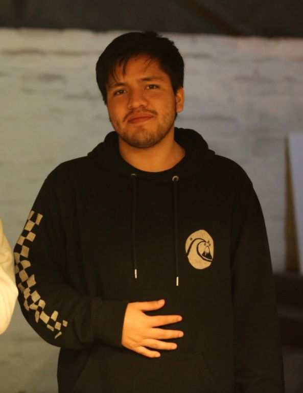

Who Am I
Web Developer, Community Manager in Houston
PortfolioWelcome to my portfolio! As mentioned before, I am a web developer and marketer currently living in Houston. Creating and turning ideas into content that people enjoy using is my passion. I believe the best work happens when creativity meets problem-solving, and that’s what I strive for in every project.
Work Experience
- Community Manager (Cocktail Magazine)
- Human Resources (Deep Sounding E.I.R.L.)
- Community Manager (Club Z Santa Rosa)
- Cashier (The Coyote Grill)
Education
- Peruvian University of Applied Sciences (Marketing)
- San Jacinto College (Webpage Development)
- English as a Foreign Language Certification C2 (TOEFL)
- Microsoft Office, Illustrator, Photoshop, HTML